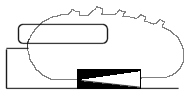
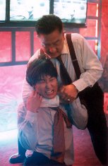
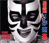
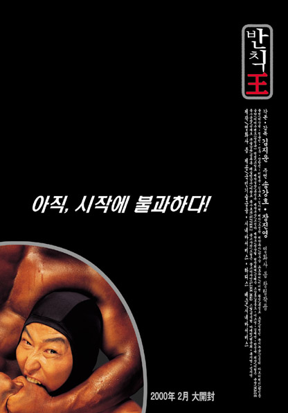

|  | |
28. August 2006
The Foul King (Kor 2001)

Das uninteressante Catcher Genre scheint interessanterweise außerordentlich gute Filme zu inspirieren. Aldritch's letzter Film "...All the Marbles" 1981, Forman's letzter Film "Der Mondmann" 1999, und die spektakulär erfolgreiche Schauspielerkomödie "Foul King" aus Korea. Lediglich Jared Hess' "Napoleon Dynamite" Nachfolgefilm "Nacho Libre" leidet unter Inspirationslosigkeit. Ich hasse Catchen, aber jeder wird den "Foul King" Song Kang-Ho lieben.
"When you buy a ticket to a film about WWF-style pro wrestling, you usually don't anticipate subtle characterization or complex themes. The Foul King is billed as a comedy, and it certainly is very funny. Nonetheless, this work is far more ambitious than its garish red and yellow posters would have you believe.
 The Foul King Dong-ho is a shy banker who takes up pro wrestling without telling his father. After the repeated abuse leveled on him by his manic, power-obsessed bank manager, he hopes to find in wrestling both a space free of hierarchy and a means of escaping the manager's headlocks. In the course of his training he practices his moves and struggles to attain the self-confidence to deal with his personal and professional life. Eventually, however, he realizes that he must confront his ringside identity as the masked Foul King.
 Director Kim Jee-woon scored a hit in 1998 with his debut feature The Quiet Family, particularly among European audiences. With The Foul King, however, he takes a big step forward, topping his previous feature and firmly establishing himself as a director worth following. Kim wrote the screenplay to this film, and his background in theater comes across in the fine ensemble acting provided by his talented cast, including Chang Jin-young, Park Sang-myun, and notably Song Kang-ho.
Amidst the excitement over this movie, Song Kang-ho has been transformed into a major star. Although well-known for his supporting roles in past films such as No. 3, The Quiet Family, and Shiri, with The Foul King he has found his first opportunity to play a leading role. His skill at expressing both the humor and pathos of his character will ensure that it will not be his last. Aside from acting so well, he also performed most of the flips, drops, and body slams without the aid of a stunt double.
The Foul King has become a sensation in Korea, drawing high critical praise and mobs of enthusiastic viewers. Fans from abroad are likely to become just as excited, when and if they get the opportunity to see it." (Darcy Paquet - koreanfilm.org)
"Your face will hurt from smiling." - imdb
Festivalpreise:
Publikumspreis - Far East Film Festival
Bester Regisseur - Milan International Film Festival
"Banchikwang" Kor 2001, B+R: Kim Ji-woon, D: Song Kang-Ho. 116min, Kor.meUT
19:30 Uhr, Space04 Kunsthaus Graz, € 5.-
- [imdb] 7.3/10 (302 votes)
- [koreanfilm.org]